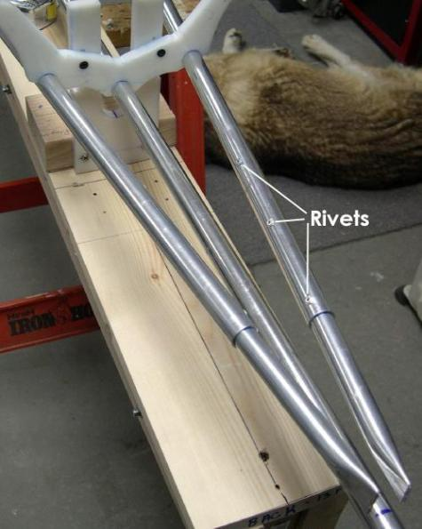
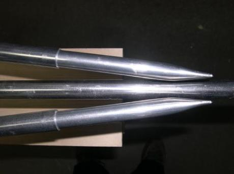

| Stem / Stern Inserts (5 of 5) | Menu Last Page Next Page |
|  |

Finished Chines - The chines are now ready for attachment to the 1/2" HDPE stem plates. Note that the inside edge is sloped to fit flush against the stem plate. Riveting - The flattened 12" inserts are riveted inside the stringers at bow and stern. Drill and pull 3 rivets centered on the portion of the 5/8" insert inside the 3/4" stringer. The keel will next be bent to create the bow and stern before the HDPE stem plates are attached.
|